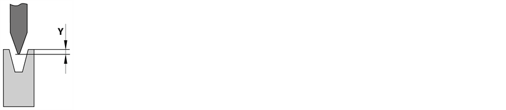
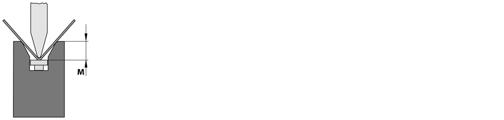

Cet onglet permet de réaliser des corrections du coulisseau. Les corrections d'angle sont réparties sur les zones suivantes :
Ce rubrique permet de déplacer la position et les paramètres du coulisseau de l'axe Y (tablier supérieur).
- Y absolu
- Y relatif
Cette option permet de corriger la valeur nominale du coulisseau. Il s'agit de la distance entre le bord inférieur de l'outil inférieur et le bord supérieur de l'outil inférieur. La correction peut être exécutée pour l'axe gauche (Y1) et l'axe droite (Y2) séparément ou pour les deux axes comme groupe.

Ajustement fin de la position d'axe entrée.
Ce rubrique permet de corriger la position du coulisseau de l'axe M (outil inférieur).
- M absolu
- M relatif
Cette option permet de corriger la valeur nominale du bord supérieur du système à coins. Il s'agit de la distance entre le bord supérieur du système à coins et le bord supérieur de la table de presse.

Ajustement fin de la position d'axe entrée.
Cette rubrique permet de corriger les paramètres généraux du coulisseau.
- Point mort haut
- min : Épaisseur de tôle + 1,0 mm
- max. : < position maximum Y1 ou Y2
- Point de changement de vitesse bas
- min : Point de sécurité
- max. : < position maximum Y1 ou Y2
- Point de blocage
- min : 50 % de l'épaisseur de tôle
- max.: < point d'inversion
Définit la position du coulisseau à la fin du cycle de pliage.
Contrôle le passage de la vitesse rapide à la vitesse réduite du tablier supérieur. Cette option augmente le passage de la vitesse rapide à la vitesse réduite.
Définit la position pour le "blocage" de la pièce à plier. Ceci est important lorsqu'un retour est programmé que des ou des aides au pliage sont activées.
- Point de changement de vitesse haut
- min : Position Y programmée
- max : Position maximum
- Vitesse de pliage descente
- min : 0,5 mm/s
- max : 10,0 mm/s
- Vitesse de pliage montée
- min : 0,5 mm/s
- max : 10,0 mm/
- Force de pression
- min : 0,0 t
- max.: < Limité par la force de pression maximale de la machine et la charge maximale des outils.
- Temps de pression
Définit le point auquel le tablier supérieur se déplace en haut à une vitesse définie avant de passer à la vitesse rapide.
Si le paramètre Vitesse de pliage montée est réglé sur une valeur <10 mm/s, la valeur Point d'inversion montée est réglée automatiquement sur l'épaisseur de la tôle.
Définit la vitesse de pliage descente.
Lorsque l'aide au pliage est activée, la vitesse maximum diminue (en fonction de l'axe alpha).
Définit la vitesse de pliage montée.
Cette vitesse ne s'applique que si le paramètre Point d'inversion montée est supérieur au PMB. Si le paramètre Pliage Le pliage est un élément de la programmation du profilé, qui désigne un changement de forme de la pièce à usiner. Il est possible d'associer plusieurs attributs à un pliage : Longueur de côté, angle de pliage, rayon de pliage (option), angle de pliage (option), attributs supplémentaires (option). Un pliage peut se composer de plusieurs processus de pliage. montée est réglé sur une valeur <10 mm/s, la valeur Point d'inversion montée est réglée automatiquement sur l'épaisseur de la tôle.
Définit la force à exercer pour plier la pièce à plier.
Définit la durée pendant laquelle le tablier supérieur reste au point mort bas (PMB)
min : 0,0 s
max : 10 s (configurable)
- Arrêt PMB
- Pas de course du coulisseau
- Facteur de bombage
- min : 0,0
- max : <10
Si ce paramètre est activé, le tablier supérieur reste au point mort bas jusqu'à ce que l'opérateur actionne le pupitre de commande (pédale ou bouton 2 mains). Dès que l'opérateur relâche le pupitre de commande, le tablier supérieur avance jusqu'au point mort haut programmé.
Lorsque ce paramètre est activé, le tablier supérieur ne se déplace pas pendant le processus actuel. Ceci permet des mouvements complexes du périphérique au niveau de l'application dans la perspective de l'étape de processus suivante. Ceci peut être utile par exemple pour les cellules de pliage de robot pour le repositionnement des axes.
Ajustement du bombage
<1 - Diminution du bombage
>1 - Augmentation du bombage